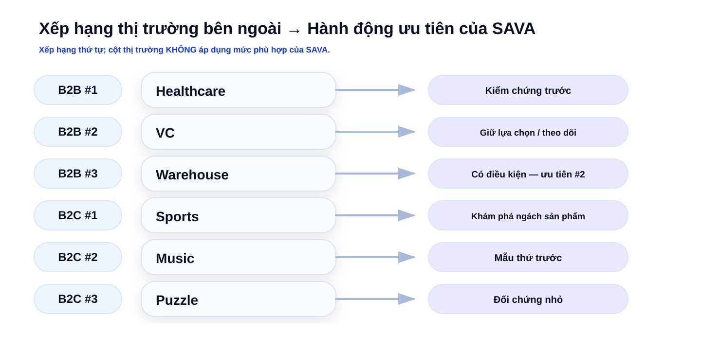
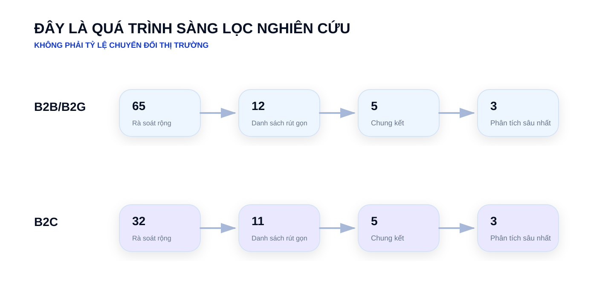

Báo cáo đề xuất định hướng kinh doanh · Gửi Tổng Giám đốc
SAVRSE NÊN THỬ 2 HƯỚNG TRƯỚC KHI ĐẦU TƯ LỚN
Y tế cho B2B. Một game VR hành động theo nhạc cho B2C.
Chưa nên mở hai đội sản phẩm đầy đủ. Mục tiêu là trả lời nhanh: khách hàng Y tế có trả tiền không, và game Âm nhạc có đủ vui để người chơi quay lại không.
Một thử nghiệm Y tế nhỏ — để kiểm tra người mua và khả năng trả tiền.
Một prototype Âm nhạc nhỏ — để kiểm tra gameplay và việc chơi lại.
Người chịu trách nhiệm + điều kiện dừng.
Quyền tiếp cận đối tác / chuyên gia / người mua.
Kiểm tra mã nguồn, quyền sở hữu, giấy phép, tài sản có thể tái sử dụng.
Nguyên tắc: không chạy hai chương trình đầy đủ cùng lúc.
CHƯA PHÊ DUYỆT
CHỜ BẰNG CHỨNG
Đội sản phẩm đầy đủ.
Ngân sách lớn.
Cam kết doanh thu.
Mở rộng Music World.
Chưa có nguồn tạo tiền nào được chứng minh trong 10 cơ hội cuối.
Hình minh họa — không phải sản phẩm hoặc triển khai của SAVA
B2B
Y TẾ: CÓ BÀI TOÁN THẬT, NHƯNG SAVA PHẢI TÌM ĐƯỢC NGƯỜI MUA TRƯỚC
Mô phỏng để đào tạo thủ thuật / kỹ năng lâm sàng là cơ hội B2B/B2G mạnh nhất sau khi rà soát thị trường. Nhưng SAVA chưa có chuyên môn y khoa và chưa có người mua cụ thể.
Vì sao đáng quan tâm
Vấn đề đào tạo có hậu quả thật, cần luyện tập lặp lại.
Có tín hiệu mua sắm của tổ chức.
Có thể tạo phần mềm dùng lại cho nhiều khách hàng.
SAVA còn thiếu
Chuyên môn lâm sàng.
Người mua và đường mua sắm cụ thể.
Bằng chứng khách hàng đã trả tiền.
Câu hỏi cần trả lời:
“Có tổ chức nào sẵn sàng cùng SAVA thử và trả tiền cho một mô-đun hẹp không?”
B2C
ÂM NHẠC: ĐỪNG XÂY THẾ GIỚI ẢO. HÃY CHỨNG MINH GAMEPLAY TRƯỚC.
Hướng Âm nhạc mới là một game VR hành động theo nhạc — trả phí, chơi một mình là đủ. Đây không phải Music World 2, không phải buổi hòa nhạc ảo, không phải mạng xã hội.
Câu hỏi cần trả lời:
“Người chơi có thấy vui và tự muốn chơi lại không?”
Chỉ cần xây:
Một prototype nhỏ.
Đo:
Cảm giác vui, độ chính xác thời điểm, việc chơi lại.
Hình minh họa — không phải sản phẩm hoặc triển khai của SAVA
Vì sao
VÌ SAO LÀ Y TẾ VÀ ÂM NHẠC?
Hai hướng này là tổ hợp tốt nhất giữa sức hấp dẫn của thị trường và điểm xuất phát hiện tại của SAVA. Chúng cần được thử theo hai cách khác nhau.
Y TẾ
Bất định nằm ở người mua và chuyên môn: có tổ chức nào trả tiền không?
Nên thử trước: tìm đối tác + người mua thật.
ÂM NHẠC
Bất định nằm ở sản phẩm: game có đủ vui để người chơi quay lại không?
Nên thử trước: một prototype gameplay nhỏ.
Thị trường
THỊ TRƯỜNG TỐT CHƯA ĐỦ
Thị trường hấp dẫn không có nghĩa SAVA nên làm ngay. Câu trả lời “sao Sports đứng #1 nhưng Music lại đi trước?” nằm ở đây.

Thị trường: Thể thao #1, Âm nhạc #2, Giải đố #3. Xét năng lực SAVA: Âm nhạc → thử trước; Giải đố → phương án nhỏ; Thể thao → cần tìm điểm vào.
Thị trường
SAVA CÓ GÌ ĐỂ BẮT ĐẦU?
Để tránh chọn ý tưởng chỉ vì công ty đã quen làm, chúng tôi đánh giá thị trường trước, rồi mới đưa năng lực SAVA vào.

B2B: 65 → 12 → 5 → 3 · B2C: 32 → 11 → 5 → 3 · Cơ sở dữ liệu toàn chương trình: 112 = 96 cơ hội có thể xếp hạng + 16 nhóm bao trùm.
SAVA
SAVA CÓ GÌ, CÒN THIẾU GÌ?
Có nền tảng kỹ thuật, chưa có lợi thế thương mại được chứng minh.
Có nền tảng
Unity / VR / 3D thời gian thực.
Backend / dữ liệu.
Kinh nghiệm làm game và nội dung.
Chưa được phép suy ra
Chuyên môn y khoa, điều khiển công nghiệp.
Đội ngũ rảnh để bắt đầu ngay.
Quyền tái sử dụng toàn bộ mã nguồn / tài sản.
Lợi thế thực sự ở từng hướng.
27 người/vai trò Savrse ≠ 27 người rảnh.
Hơn 80 nhân sự công ty ≠ nguồn lực có thể dành cho Savrse.
Tiếp theo
THỬ NHƯ THẾ NÀO?
Mỗi hướng có 3 điều kiện cần đạt. Nếu đạt, xem xét mở rộng. Nếu không, dừng hoặc thu hẹp.
Y TẾ — 3 điều kiện
Có đối tác chuyên môn và người mua thật?
Có cam kết trả tiền hoặc hợp đồng cùng thử?
Phần lõi có dùng lại được cho khách hàng thứ hai?
ĐẠT → xem xét mở rộngKHÔNG ĐẠT → dừng / thu hẹp
ÂM NHẠC — 3 điều kiện
Gameplay có vui?
Người chơi có tự quay lại?
Có đường bán sản phẩm hợp lý?
ĐẠT → xem xét sản xuất đầy đủKHÔNG ĐẠT → dừng / thu hẹp
Xem các bước chi tiết
Y tế: đối tác chuyên môn → người mua → cam kết trả phí → mua sắm/IT/bảo mật/LMS → phần lõi dùng lại → kinh tế sau bằng chứng trả phí đầu tiên.
Âm nhạc: prototype hành động cốt lõi → gameplay vui → timing/input đáng tin → chơi lại → năng suất tạo nội dung → sẵn sàng trả tiền → phân phối/quyền nhạc.
MUSIC WORLDTẠM DỪNG
Music World cũ đang tạm dừng.
Giữ lại để tham chiếu tài sản và công nghệ. Hướng Âm nhạc mới là một game VR hành động theo nhạc, không phải Music World 2.
Phụ lục
BẰNG CHỨNG
Lớp này dành cho người muốn kiểm tra sâu. Mọi nghiên cứu, nguồn và truy vết đều được giữ nguyên.
Phương pháp & giới hạn
Chương trình dùng logic “đánh giá thị trường trước, đánh giá SAVA sau”. Thứ hạng thị trường đóng băng trước khi đưa năng lực SAVA vào; các đánh giá sau đó không làm thay đổi thứ hạng bên ngoài.
Sổ bằng chứng định lượng (32 chỉ số)
WEB-16
Sổ bằng chứng định lượng
Mỗi con số được phép chứng minh đến đâu?
32 chỉ số bằng chứng nguyên tử được chuẩn hóa về ID theo nguồn; 25 đối tượng định lượng của V1A là lớp trình bày, trong đó một số đối tượng gộp nhiều chỉ số. Mỗi chỉ số có lớp bằng chứng và trần diễn giải.
SỔ BẰNG CHỨNG
25 đối tượng định lượng hiển thị
Hỗn hợp
Chứng minh: Sổ con số website đầy đủ.
Không chứng minh: Không tạo điểm tổng hợp, TAM hoặc dự báo.
25 đối tượng trình bày của V1A ánh xạ đầy đủ tới 32 chỉ số bằng chứng nguyên tử có ID theo nguồn và trần diễn giải.
NGỮ NGHĨA CON SỐ
Mỗi con số đều có trần diễn giải
Hỗn hợp
Chứng minh: Ngăn diễn giải vượt quá bằng chứng.
Không chứng minh: Không biến loại bằng chứng thành điểm độ tin cậy.
Hai câu hỏi bắt buộc cạnh chỉ số: CON SỐ NÀY CHO THẤY GÌ? và CON SỐ NÀY CHƯA CHỨNG MINH ĐƯỢC GÌ?
SỐ LIỆU CHƯƠNG TRÌNH
Số bản ghi trong vũ trụ cơ hội
SỐ LIỆU CHƯƠNG TRÌNH112 = 96 bản ghi có thể xếp hạng + 16 nhóm bao trùm / không xếp hạng.
Chứng minh: Universe của chương trình có 112 bản ghi truy vết.
Không chứng minh: Không đồng nghĩa quy mô thị trường và không bằng phép cộng 65+32 của hai nhánh thực thi.
112Số bản ghi trong vũ trụ cơ hội
112
SỐ LIỆU CHƯƠNG TRÌNH
Số bản ghi cơ hội có thể xếp hạng
SỐ LIỆU CHƯƠNG TRÌNHLà tập con của 112 bản ghi.
Chứng minh: 96 trong 112 bản ghi có thể xếp hạng.
Không chứng minh: Không đồng nghĩa số đơn vị trong các nhánh B2B/B2C thực thi.
96Số bản ghi cơ hội có thể xếp hạng
96
SỐ LIỆU CHƯƠNG TRÌNH
Số bản ghi bao trùm / không xếp hạng
SỐ LIỆU CHƯƠNG TRÌNHLà tập con của 112 bản ghi.
Chứng minh: 16 trong 112 bản ghi là nhóm bao trùm / không xếp hạng.
Không chứng minh: Không đại diện cho số finalist bị loại.
16Số bản ghi bao trùm / không xếp hạng
16
SỐ LIỆU CHƯƠNG TRÌNH
Quy trình sàng lọc B2B/B2G
SỐ LIỆU CHƯƠNG TRÌNHThứ hạng finalist đã khóa; số 3 ở bước phân tích sâu không phải phê duyệt đầu tư.
Chứng minh: Nhánh B2B/B2G thực thi thu hẹp từ 65 xuống 12, rồi 5 và 3.
Không chứng minh: Không phải tỷ lệ chuyển đổi của thị trường và không đồng nghĩa phê duyệt đầu tư.
65 → 12 → 5 → 3Quy trình sàng lọc B2B/B2G
65 → 12 → 5 → 3
SỐ LIỆU CHƯƠNG TRÌNH
Quy trình sàng lọc B2C
SỐ LIỆU CHƯƠNG TRÌNHKhông cộng 32 với 65 để suy ra universe = 97.
Chứng minh: Nhánh B2C thực thi thu hẹp từ 32 xuống 11, rồi 5 và 3.
Không chứng minh: Không phải tỷ lệ chuyển đổi của thị trường và không đồng nghĩa cam kết sản phẩm.
32 → 11 → 5 → 3Quy trình sàng lọc B2C
32 → 11 → 5 → 3
MUA SẮM / HỢP ĐỒNG CHÍNH THỨC
Giá trị hợp đồng cuối cùng ORF–Vizrt giai đoạn 2026–2028
Mua sắm / hợp đồng chính thứcĐây là giá trị toàn thỏa thuận; phải giữ phạm vi 2026–2028.
Chứng minh: Tồn tại một đối tượng mua sắm tổ chức nhiều năm với giá trị hợp đồng cuối cùng này.
Không chứng minh: Không chứng minh giá trị hợp đồng thường niên của phần mềm thuần, khoản thực trả, quy mô thị trường hoặc doanh thu SAVA có thể đạt.
EUR 3.485.539,20Giá trị hợp đồng cuối cùng ORF–Vizrt giai đoạn 2026–2028
EUR 3.485.539,20
TRƯỜNG HỢP DO NHÀ CUNG CẤP CÔNG BỐ
Mức giảm thời gian lắp đặt / đưa vào vận hành
Tình huống do nhà cung cấp công bốPhải giữ nguyên điều kiện 'tới 50%'.
Chứng minh: Một trường hợp cụ thể do nhà cung cấp công bố báo cáo mức giảm thời gian đưa vào vận hành đáng kể.
Không chứng minh: Không phải chuẩn ROI độc lập và không chứng minh mức tiết kiệm phổ quát.
tối đa 50%Mức giảm thời gian lắp đặt / đưa vào vận hành
tối đa 50%
TRƯỜNG HỢP DO NHÀ CUNG CẤP CÔNG BỐ
Số dự án đang triển khai trong bối cảnh tiếp nối
Tình huống do nhà cung cấp công bốLà thông tin trong một trường hợp do nhà cung cấp công bố.
Chứng minh: Nguồn cho thấy có hoạt động dự án tiếp nối trong cùng bối cảnh trường hợp.
Không chứng minh: Không chứng minh tỷ lệ mua lại, doanh thu hay biên lợi nhuận.
3 dự ánSố dự án đang triển khai trong bối cảnh tiếp nối
3 dự án
GIÁ NIÊM YẾT CHÍNH THỨC
Giá niêm yết cơ bản của GOLF+
Giá niêm yết chính thứcLà giá niêm yết, không phải giá trị doanh thu thực nhận.
Chứng minh: Cho thấy tồn tại cấu trúc sản phẩm VR thể thao trả phí.
Không chứng minh: Không chứng minh số bản bán, doanh thu thực nhận hoặc mức sẵn sàng trả tiền cho sản phẩm SAVA.
khoảng USD 29,99Giá niêm yết cơ bản của GOLF+
khoảng USD 29,99
GIÁ NIÊM YẾT CHÍNH THỨC
Số sân / lựa chọn trong GOLF+ Pass / Giá niêm yết GOLF+ Pass theo tháng / Giá niêm yết GOLF+ Pass theo năm
Giá niêm yết chính thứcLà mô tả sản phẩm / nội dung do nguồn chính thức công bố.; Giá niêm yết chính thức.
Chứng minh: Nguồn chính thức công bố GOLF+ Pass có hơn 40 lựa chọn.; Cho thấy tồn tại lựa chọn thuê bao theo tháng.; Cho thấy tồn tại lựa chọn thuê bao theo năm.
Không chứng minh: Không chứng minh số người đăng ký hoặc khả năng giữ chân.; Không chứng minh ARPU, giá thực nhận hoặc tỷ lệ chuyển đổi sang trả tiền.; Không chứng minh khả năng giữ chân, số người đăng ký hoặc doanh thu thực nhận.
hơn 40 sân golfSố sân / lựa chọn trong GOLF+ Pass
USD 9,99/thángGiá niêm yết GOLF+ Pass theo tháng
USD 99,99/nămGiá niêm yết GOLF+ Pass theo năm
hơn 40 sân golf; USD 9,99/tháng; USD 99,99/năm
GIÁ NIÊM YẾT CHÍNH THỨC
Giá niêm yết Racket Club
Giá niêm yết chính thứcGiá niêm yết chính thức trên cửa hàng.
Chứng minh: Cho thấy tồn tại một tựa VR thể thao / kỹ năng trả phí ở mức giá niêm yết này.
Không chứng minh: Không chứng minh doanh số hoặc khả năng giữ chân.
USD 24,99Giá niêm yết Racket Club
USD 24,99
GIÁ NIÊM YẾT CHÍNH THỨC
Giá niêm yết gói nhạc Synth Riders
Giá niêm yết chính thứcGiá sản phẩm chính thức; không phải bằng chứng mức sẵn sàng trả tiền cho SAVA.
Chứng minh: Cho thấy tồn tại cấu trúc DLC / gói nhạc trả phí.
Không chứng minh: Không chứng minh tỷ lệ mua thêm, doanh thu, biên lợi nhuận hoặc kinh tế quyền âm nhạc.
Giá niêm yết chính thứcGiá niêm yết / press kit chính thức.
Chứng minh: Cho thấy tồn tại cấu trúc sản phẩm giải đố VR cao cấp trả phí.
Không chứng minh: Không chứng minh doanh số, khả năng giữ chân hoặc WHY-VR của ý tưởng SAVA.
USD 9,99Giá niêm yết Cubism
USD 9,99
GIÁ NIÊM YẾT CHÍNH THỨC
Giá niêm yết cơ bản Puzzling Places
Giá niêm yết chính thứcGiá niêm yết chính thức trên cửa hàng.
Chứng minh: Cho thấy tồn tại thêm một mức giá trả phí trong nhóm giải đố VR.
Không chứng minh: Không chứng minh doanh số, khả năng giữ chân hoặc nhu cầu đối với SAVA.
USD 19,99Giá niêm yết cơ bản Puzzling Places
USD 19,99
BẰNG CHỨNG HỖN HỢP
Giá mua một lần của Noun Town / Số ngôn ngữ Noun Town hỗ trợ / Số người chơi Noun Town do doanh nghiệp công bố
Hỗn hợpPhần giá là bằng chứng sản phẩm chính thức.; Chỉ phản ánh độ rộng tính năng.; Phải giữ nguyên điều kiện 'hơn'; đây là số liệu do doanh nghiệp công bố.
Chứng minh: Cho thấy tồn tại cấu trúc sản phẩm học ngoại ngữ VR trả phí một lần.; Nguồn hiện tại cho biết sản phẩm hỗ trợ 12 ngôn ngữ.; Doanh nghiệp công bố quy mô người chơi trên 200 nghìn.
Không chứng minh: Không chứng minh khả năng giữ chân hoặc doanh thu thực nhận.; Không chứng minh hiệu quả học tập hoặc thành công thương mại.; Không chứng minh số người trả tiền, doanh thu, khả năng giữ chân hoặc quy mô độc lập.
USD 19,99Giá mua một lần của Noun Town
12 ngôn ngữSố ngôn ngữ Noun Town hỗ trợ
hơn 200.000 người chơiSố người chơi Noun Town do doanh nghiệp công bố
USD 19,99; 12 ngôn ngữ; hơn 200.000 người chơi
BẰNG CHỨNG HỌC THUẬT
Số RCT trong phân tích gộp về học ngoại ngữ
Nghiên cứu học thuậtBằng chứng học thuật có trần diễn giải thương mại.
Chứng minh: Phân tích gộp được trích dẫn tổng hợp 41 RCT.
Không chứng minh: Không chứng minh hiệu quả phổ quát, khả năng giữ chân người dùng trả phí hoặc ưu thế thương mại.
41 RCTSố RCT trong phân tích gộp về học ngoại ngữ
41 RCT
SỐ LIỆU DO DOANH NGHIỆP CÔNG BỐ
Giá khởi điểm hệ thống Zero Latency / Tỷ lệ chia sẻ doanh thu Zero Latency
Số liệu do doanh nghiệp công bốGiá hệ thống xấp xỉ; không phải hiệu quả kinh tế thực nhận.; Là điều khoản thương mại, không phải biên lợi nhuận.
Chứng minh: Cho thấy tồn tại cấu trúc thương mại kiểu đầu tư hệ thống giữa nhà cung cấp và đơn vị vận hành.; Cho thấy tồn tại điều khoản chia sẻ doanh thu theo vé.
Không chứng minh: Không chứng minh lợi nhuận hoặc thời gian hoàn vốn của đơn vị vận hành.; Không chứng minh lợi nhuận cấp địa điểm hoặc kinh tế của SAVA.
khoảng USD 165.000Giá khởi điểm hệ thống Zero Latency
16% doanh thu véTỷ lệ chia sẻ doanh thu Zero Latency
khoảng USD 165.000; 16% doanh thu vé
SỐ LIỆU DO DOANH NGHIỆP CÔNG BỐ
Quy mô mạng lưới Zero Latency / Số lượt chơi tích lũy Zero Latency
Số liệu do doanh nghiệp công bốSố liệu do doanh nghiệp công bố; giữ nguyên dấu 'hơn'.
Chứng minh: Doanh nghiệp công bố mạng lưới trên 120 địa điểm.; Doanh nghiệp công bố hơn 5 triệu lượt chơi tích lũy.
Không chứng minh: Không chứng minh số địa điểm có lãi hoặc quy mô thị trường độc lập.; Không chứng minh số người dùng duy nhất, tỷ lệ chơi lại hoặc kinh tế đơn vị.
hơn 120 địa điểmQuy mô mạng lưới Zero Latency
hơn 5 triệu lượt chơiSố lượt chơi tích lũy Zero Latency
hơn 120 địa điểm; hơn 5 triệu lượt chơi
TRƯỜNG HỢP PHẢN BIỆN / BÊN THỨ BA
Khoảng thời gian địa điểm Frisco đóng cửa
Trường hợp phản chứng / bên thứ baTrường hợp địa phương đơn lẻ; không phải ước tính xác suất cơ sở.
Chứng minh: Một trường hợp cụ thể cho thấy địa điểm đóng khoảng 5 tháng trước khi mở lại.
Không chứng minh: Không phải tỷ lệ thất bại của toàn ngành.
khoảng 5 thángKhoảng thời gian địa điểm Frisco đóng cửa
khoảng 5 tháng
SỐ LIỆU DO DOANH NGHIỆP CÔNG BỐ
Quy mô thư viện bài tập FitXR
Số liệu do doanh nghiệp công bốQuy mô nội dung do doanh nghiệp công bố.
Chứng minh: Cho thấy gánh nặng vận hành / nhịp độ nội dung có thể lớn.
Không chứng minh: Không chứng minh khả năng giữ chân hoặc số người đăng ký.
hơn 1.000 bài tậpQuy mô thư viện bài tập FitXR
hơn 1.000 bài tập
SỐ LIỆU DO DOANH NGHIỆP CÔNG BỐ
Số người dùng phần mềm duy nhất của Immersed
Số liệu do doanh nghiệp công bốSố liệu do tổ chức phát hành / doanh nghiệp công bố.
Chứng minh: Doanh nghiệp công bố quy mô người dùng phần mềm đáng kể.
Không chứng minh: Không chứng minh số người dùng trả phí đang hoạt động hoặc lợi nhuận.
khoảng 1,5 triệu người dùng phần mềm duy nhấtSố người dùng phần mềm duy nhất của Immersed
khoảng 1,5 triệu người dùng phần mềm duy nhất
SỐ LIỆU DO DOANH NGHIỆP CÔNG BỐ
Số người dùng AR của Houzz
Số liệu do doanh nghiệp công bốTín hiệu sử dụng / tương quan; không phải bằng chứng nhân quả.
Chứng minh: Doanh nghiệp công bố mức sử dụng AR trên 1 triệu người dùng.
Không chứng minh: Không chứng minh quan hệ nhân quả với tăng chuyển đổi hoặc mức sẵn sàng trả tiền.
hơn 1 triệu người dùng ARSố người dùng AR của Houzz
hơn 1 triệu người dùng AR
SỐ LIỆU DO DOANH NGHIỆP CÔNG BỐ
Quy mô người chơi trọn đời Rec Room / Quy mô người dùng hàng tháng Rec Room
Số liệu do doanh nghiệp công bốCông bố của doanh nghiệp kèm cảnh báo về tính bền vững.; Giữ nguyên cách diễn đạt không chính xác của nguồn.
Chứng minh: Cho thấy quy mô người dùng trọn đời rất lớn do doanh nghiệp công bố có thể cùng tồn tại với quyết định đóng dịch vụ.; Doanh nghiệp công bố quy mô hàng tháng ở mức hàng triệu người dùng.
Không chứng minh: Không chứng minh kinh tế đơn vị bền vững hoặc thành công của mọi sản phẩm xã hội.; Không cung cấp MAU chính xác, số người trả tiền hoặc lợi nhuận.
150 triệu người chơi trọn đờiQuy mô người chơi trọn đời Rec Room
hàng triệu người dùng mỗi thángQuy mô người dùng hàng tháng Rec Room
150 triệu người chơi trọn đời; hàng triệu người dùng mỗi tháng
DỮ LIỆU NỘI BỘ ĐÃ GHI NHẬN
Số vai trò Savrse trong kiểm toán năng lực
Tài liệu nội bộKhông cộng với số nhân sự toàn công ty trên 80.
Chứng minh: Danh sách kiểm toán năng lực ghi nhận 27 vai trò liên quan.
Không chứng minh: Không chứng minh nhân sự quy đổi toàn thời gian có thể phân bổ, công suất trống, mức sử dụng hoặc mức làm chủ chuyên môn.
27Số vai trò Savrse trong kiểm toán năng lực
27
DỮ LIỆU NỘI BỘ ĐÃ GHI NHẬN
Quy mô nhân sự toàn công ty SAVA
Tài liệu nội bộLà bản ghi ngữ nghĩa riêng với danh sách 27 vai trò; URL nguồn chưa có trong báo cáo hiện tại.
Chứng minh: Hồ sơ công ty báo cáo quy mô nhân sự toàn công ty trên 80 người.
Không chứng minh: Không chứng minh quy mô đội Savrse có thể phân bổ hoặc công suất của BU.
>80Quy mô nhân sự toàn công ty SAVA
>80
Đang hiển thị 32 / 32
112Tài liệu nội bộ
Số bản ghi trong vũ trụ cơ hội
số liệu chương trình chính xác
Chứng minh: Universe của chương trình có 112 bản ghi truy vết.
Không chứng minh: Không đồng nghĩa quy mô thị trường và không bằng phép cộng 65+32 của hai nhánh thực thi.
112 = 96 bản ghi có thể xếp hạng + 16 nhóm bao trùm / không xếp hạng.
96Tài liệu nội bộ
Số bản ghi cơ hội có thể xếp hạng
số liệu chương trình chính xác
Chứng minh: 96 trong 112 bản ghi có thể xếp hạng.
Không chứng minh: Không đồng nghĩa số đơn vị trong các nhánh B2B/B2C thực thi.
Là tập con của 112 bản ghi.
16Tài liệu nội bộ
Số bản ghi bao trùm / không xếp hạng
số liệu chương trình chính xác
Chứng minh: 16 trong 112 bản ghi là nhóm bao trùm / không xếp hạng.
Không chứng minh: Không đại diện cho số finalist bị loại.
Là tập con của 112 bản ghi.
65 → 12 → 5 → 3Tài liệu nội bộ
Quy trình sàng lọc B2B/B2G
funnel chương trình
Chứng minh: Nhánh B2B/B2G thực thi thu hẹp từ 65 xuống 12, rồi 5 và 3.
Không chứng minh: Không phải tỷ lệ chuyển đổi của thị trường và không đồng nghĩa phê duyệt đầu tư.
Thứ hạng finalist đã khóa; số 3 ở bước phân tích sâu không phải phê duyệt đầu tư.
32 → 11 → 5 → 3Tài liệu nội bộ
Quy trình sàng lọc B2C
funnel chương trình
Chứng minh: Nhánh B2C thực thi thu hẹp từ 32 xuống 11, rồi 5 và 3.
Không chứng minh: Không phải tỷ lệ chuyển đổi của thị trường và không đồng nghĩa cam kết sản phẩm.
Không cộng 32 với 65 để suy ra universe = 97.
EUR 3.485.539,20Mua sắm / hợp đồng chính thức
Giá trị hợp đồng cuối cùng ORF–Vizrt giai đoạn 2026–2028
mua sắm chính thức
Chứng minh: Tồn tại một đối tượng mua sắm tổ chức nhiều năm với giá trị hợp đồng cuối cùng này.
Không chứng minh: Không chứng minh giá trị hợp đồng thường niên của phần mềm thuần, khoản thực trả, quy mô thị trường hoặc doanh thu SAVA có thể đạt.
Đây là giá trị toàn thỏa thuận; phải giữ phạm vi 2026–2028.
tối đa 50%Tình huống do nhà cung cấp công bố
Mức giảm thời gian lắp đặt / đưa vào vận hành
'tới'; trường hợp do nhà cung cấp công bố
Chứng minh: Một trường hợp cụ thể do nhà cung cấp công bố báo cáo mức giảm thời gian đưa vào vận hành đáng kể.
Không chứng minh: Không phải chuẩn ROI độc lập và không chứng minh mức tiết kiệm phổ quát.
Phải giữ nguyên điều kiện 'tới 50%'.
3 dự ánTình huống do nhà cung cấp công bố
Số dự án đang triển khai trong bối cảnh tiếp nối
trường hợp do nhà cung cấp công bố
Chứng minh: Nguồn cho thấy có hoạt động dự án tiếp nối trong cùng bối cảnh trường hợp.
Không chứng minh: Không chứng minh tỷ lệ mua lại, doanh thu hay biên lợi nhuận.
Là thông tin trong một trường hợp do nhà cung cấp công bố.
khoảng USD 29,99Giá niêm yết chính thức
Giá niêm yết cơ bản của GOLF+
xấp xỉ; giá niêm yết
Chứng minh: Cho thấy tồn tại cấu trúc sản phẩm VR thể thao trả phí.
Không chứng minh: Không chứng minh số bản bán, doanh thu thực nhận hoặc mức sẵn sàng trả tiền cho sản phẩm SAVA.
Là giá niêm yết, không phải giá trị doanh thu thực nhận.
hơn 40 sân golfGiá niêm yết chính thức
Số sân / lựa chọn trong GOLF+ Pass
hơn / 40+
Chứng minh: Nguồn chính thức công bố GOLF+ Pass có hơn 40 lựa chọn.
Không chứng minh: Không chứng minh số người đăng ký hoặc khả năng giữ chân.
Là mô tả sản phẩm / nội dung do nguồn chính thức công bố.
USD 9,99/thángGiá niêm yết chính thức
Giá niêm yết GOLF+ Pass theo tháng
giá niêm yết
Chứng minh: Cho thấy tồn tại lựa chọn thuê bao theo tháng.
Không chứng minh: Không chứng minh ARPU, giá thực nhận hoặc tỷ lệ chuyển đổi sang trả tiền.
Giá niêm yết chính thức.
USD 99,99/nămGiá niêm yết chính thức
Giá niêm yết GOLF+ Pass theo năm
giá niêm yết
Chứng minh: Cho thấy tồn tại lựa chọn thuê bao theo năm.
Không chứng minh: Không chứng minh khả năng giữ chân, số người đăng ký hoặc doanh thu thực nhận.
Giá niêm yết chính thức.
USD 24,99Giá niêm yết chính thức
Giá niêm yết Racket Club
giá niêm yết
Chứng minh: Cho thấy tồn tại một tựa VR thể thao / kỹ năng trả phí ở mức giá niêm yết này.
Không chứng minh: Không chứng minh doanh số hoặc khả năng giữ chân.
Giá niêm yết chính thức trên cửa hàng.
USD 7,99 / 5 bài hátGiá niêm yết chính thức
Giá niêm yết gói nhạc Synth Riders
giá niêm yết
Chứng minh: Cho thấy tồn tại cấu trúc DLC / gói nhạc trả phí.
Không chứng minh: Không chứng minh tỷ lệ mua thêm, doanh thu, biên lợi nhuận hoặc kinh tế quyền âm nhạc.
Giá sản phẩm chính thức; không phải bằng chứng mức sẵn sàng trả tiền cho SAVA.
USD 9,99Giá niêm yết chính thức
Giá niêm yết Cubism
giá niêm yết
Chứng minh: Cho thấy tồn tại cấu trúc sản phẩm giải đố VR cao cấp trả phí.
Không chứng minh: Không chứng minh doanh số, khả năng giữ chân hoặc WHY-VR của ý tưởng SAVA.
Giá niêm yết / press kit chính thức.
USD 19,99Giá niêm yết chính thức
Giá niêm yết cơ bản Puzzling Places
giá niêm yết
Chứng minh: Cho thấy tồn tại thêm một mức giá trả phí trong nhóm giải đố VR.
Không chứng minh: Không chứng minh doanh số, khả năng giữ chân hoặc nhu cầu đối với SAVA.
Giá niêm yết chính thức trên cửa hàng.
USD 19,99Hỗn hợp
Giá mua một lần của Noun Town
giá niêm yết
Chứng minh: Cho thấy tồn tại cấu trúc sản phẩm học ngoại ngữ VR trả phí một lần.
Không chứng minh: Không chứng minh khả năng giữ chân hoặc doanh thu thực nhận.
Phần giá là bằng chứng sản phẩm chính thức.
12 ngôn ngữHỗn hợp
Số ngôn ngữ Noun Town hỗ trợ
sản phẩm / doanh nghiệp công bố
Chứng minh: Nguồn hiện tại cho biết sản phẩm hỗ trợ 12 ngôn ngữ.
Không chứng minh: Không chứng minh hiệu quả học tập hoặc thành công thương mại.
Chỉ phản ánh độ rộng tính năng.
hơn 200.000 người chơiHỗn hợp
Số người chơi Noun Town do doanh nghiệp công bố
hơn; doanh nghiệp công bố
Chứng minh: Doanh nghiệp công bố quy mô người chơi trên 200 nghìn.
Không chứng minh: Không chứng minh số người trả tiền, doanh thu, khả năng giữ chân hoặc quy mô độc lập.
Phải giữ nguyên điều kiện 'hơn'; đây là số liệu do doanh nghiệp công bố.
41 RCTNghiên cứu học thuật
Số RCT trong phân tích gộp về học ngoại ngữ
số lượng nghiên cứu học thuật
Chứng minh: Phân tích gộp được trích dẫn tổng hợp 41 RCT.
Không chứng minh: Không chứng minh hiệu quả phổ quát, khả năng giữ chân người dùng trả phí hoặc ưu thế thương mại.
Bằng chứng học thuật có trần diễn giải thương mại.
khoảng USD 165.000Giá niêm yết chính thức
Giá khởi điểm hệ thống Zero Latency
xấp xỉ; điều khoản thương mại / giá chính thức
Chứng minh: Cho thấy tồn tại cấu trúc thương mại kiểu đầu tư hệ thống giữa nhà cung cấp và đơn vị vận hành.
Không chứng minh: Không chứng minh lợi nhuận hoặc thời gian hoàn vốn của đơn vị vận hành.
Giá hệ thống xấp xỉ; không phải hiệu quả kinh tế thực nhận.
16% doanh thu véGiá niêm yết chính thức
Tỷ lệ chia sẻ doanh thu Zero Latency
điều khoản thương mại chính thức
Chứng minh: Cho thấy tồn tại điều khoản chia sẻ doanh thu theo vé.
Không chứng minh: Không chứng minh lợi nhuận cấp địa điểm hoặc kinh tế của SAVA.
Là điều khoản thương mại, không phải biên lợi nhuận.
hơn 120 địa điểmSố liệu do doanh nghiệp công bố
Quy mô mạng lưới Zero Latency
hơn; doanh nghiệp công bố
Chứng minh: Doanh nghiệp công bố mạng lưới trên 120 địa điểm.
Không chứng minh: Không chứng minh số địa điểm có lãi hoặc quy mô thị trường độc lập.
Số liệu do doanh nghiệp công bố; giữ nguyên dấu 'hơn'.
hơn 5 triệu lượt chơiSố liệu do doanh nghiệp công bố
Số lượt chơi tích lũy Zero Latency
hơn; doanh nghiệp công bố
Chứng minh: Doanh nghiệp công bố hơn 5 triệu lượt chơi tích lũy.
Không chứng minh: Không chứng minh số người dùng duy nhất, tỷ lệ chơi lại hoặc kinh tế đơn vị.
Số liệu do doanh nghiệp công bố; giữ nguyên dấu 'hơn'.
khoảng 5 thángTrường hợp phản chứng / bên thứ ba
Khoảng thời gian địa điểm Frisco đóng cửa
xấp xỉ; trường hợp phản biện
Chứng minh: Một trường hợp cụ thể cho thấy địa điểm đóng khoảng 5 tháng trước khi mở lại.
Không chứng minh: Không phải tỷ lệ thất bại của toàn ngành.
Trường hợp địa phương đơn lẻ; không phải ước tính xác suất cơ sở.
hơn 1.000 bài tậpSố liệu do doanh nghiệp công bố
Quy mô thư viện bài tập FitXR
hơn; doanh nghiệp công bố
Chứng minh: Cho thấy gánh nặng vận hành / nhịp độ nội dung có thể lớn.
Không chứng minh: Không chứng minh khả năng giữ chân hoặc số người đăng ký.
Quy mô nội dung do doanh nghiệp công bố.
khoảng 1,5 triệu người dùng phần mềm duy nhấtSố liệu do doanh nghiệp công bố
Số người dùng phần mềm duy nhất của Immersed
xấp xỉ; doanh nghiệp công bố
Chứng minh: Doanh nghiệp công bố quy mô người dùng phần mềm đáng kể.
Không chứng minh: Không chứng minh số người dùng trả phí đang hoạt động hoặc lợi nhuận.
Số liệu do tổ chức phát hành / doanh nghiệp công bố.
hơn 1 triệu người dùng ARSố liệu do doanh nghiệp công bố
Số người dùng AR của Houzz
hơn; doanh nghiệp công bố
Chứng minh: Doanh nghiệp công bố mức sử dụng AR trên 1 triệu người dùng.
Không chứng minh: Không chứng minh quan hệ nhân quả với tăng chuyển đổi hoặc mức sẵn sàng trả tiền.
Tín hiệu sử dụng / tương quan; không phải bằng chứng nhân quả.
150 triệu người chơi trọn đờiSố liệu do doanh nghiệp công bố
Quy mô người chơi trọn đời Rec Room
do doanh nghiệp công bố
Chứng minh: Cho thấy quy mô người dùng trọn đời rất lớn do doanh nghiệp công bố có thể cùng tồn tại với quyết định đóng dịch vụ.
Không chứng minh: Không chứng minh kinh tế đơn vị bền vững hoặc thành công của mọi sản phẩm xã hội.
Công bố của doanh nghiệp kèm cảnh báo về tính bền vững.
hàng triệu người dùng mỗi thángSố liệu do doanh nghiệp công bố
Quy mô người dùng hàng tháng Rec Room
do doanh nghiệp công bố; không phải số chính xác
Chứng minh: Doanh nghiệp công bố quy mô hàng tháng ở mức hàng triệu người dùng.
Không chứng minh: Không cung cấp MAU chính xác, số người trả tiền hoặc lợi nhuận.
Giữ nguyên cách diễn đạt không chính xác của nguồn.
27Tài liệu nội bộ
Số vai trò Savrse trong kiểm toán năng lực
dữ liệu nội bộ đã ghi nhận
Chứng minh: Danh sách kiểm toán năng lực ghi nhận 27 vai trò liên quan.
Không chứng minh: Không chứng minh nhân sự quy đổi toàn thời gian có thể phân bổ, công suất trống, mức sử dụng hoặc mức làm chủ chuyên môn.
Không cộng với số nhân sự toàn công ty trên 80.
>80Tài liệu nội bộ
Quy mô nhân sự toàn công ty SAVA
hơn; hồ sơ công ty
Chứng minh: Hồ sơ công ty báo cáo quy mô nhân sự toàn công ty trên 80 người.
Không chứng minh: Không chứng minh quy mô đội Savrse có thể phân bổ hoặc công suất của BU.
Là bản ghi ngữ nghĩa riêng với danh sách 27 vai trò; URL nguồn chưa có trong báo cáo hiện tại.
Nguồn chuẩn (35 nguồn) & truy vết kỹ thuật
WEB-18
Phương pháp, giới hạn, nguồn & truy vết
CEO/nhà phân tích có thể kiểm tra kết luận ở đâu?
Trang chính giữ khả năng quét nhanh; lớp bằng chứng, nguồn, lưu ý và truy vết kỹ thuật nằm sâu hơn một tương tác, nhưng không thay đổi ngữ nghĩa nghiên cứu.
PHƯƠNG PHÁP
Cách đọc nghiên cứu
Hỗn hợp
Chứng minh: Tóm tắt phương pháp.
Không chứng minh: Không đưa vào phương pháp nghiên cứu mới.
Xếp hạng thị trường bên ngoài được khóa trước khi xét mức phù hợp với SAVA; con số bị ràng buộc bởi định nghĩa; bằng chứng phản biện và phần chưa biết được nêu rõ.
KIỂM TRA
Mở nguồn
Hỗn hợp
Sổ nguồn có 35 hồ sơ chuẩn; 34 có liên kết trực tiếp. S35 là tham chiếu nội bộ chưa có URL được xác minh. Mỗi hồ sơ nêu lớp bằng chứng, cách dùng và trần diễn giải.
KỸ THUẬT
Truy vết tới báo cáo và ID nguồn
Hỗn hợp
Chứng minh: Khả năng truy vết phục vụ triển khai.
Không chứng minh: Không tạo mã website.
Đối tượng nội dung liên kết tới phần báo cáo, ID nguồn và ID chỉ số để WEB-V2 triển khai mà không phải đoán ngữ nghĩa.
35 hồ sơ nguồn chuẩn; 34 nguồn có liên kết trực tiếp; 1 tham chiếu nội bộ chưa có URL được xác minh.
Đang hiển thị 35 / 35
S01
Intent to Sole Source Eyesi Surgical VR Training Simulator
SAM.gov · 01/01/2025
Mua sắm / hợp đồng chính thức
Tín hiệu về đường mua sắm tổ chức cho mô phỏng phẫu thuật VR.
ECM Technologies - Emulate3D virtual commissioning case
Rockwell Automation · 01/02/2024
Tình huống do nhà cung cấp công bố
Trường hợp kiểm thử hệ thống điều khiển trên mô hình số (Virtual Commissioning); nguồn báo cáo mức giảm thời gian 'tới 50%' và 3 dự án đang triển khai.
ECM Technologies - Emulate3D virtual commissioning case
Rockwell Automation · 01/02/2024
Lớp bằng chứng: Tình huống do nhà cung cấp công bố
Dùng trên website: Trường hợp kiểm thử hệ thống điều khiển trên mô hình số (Virtual Commissioning); nguồn báo cáo mức giảm thời gian 'tới 50%' và 3 dự án đang triển khai.
Chứng minh: Cho thấy một trường hợp sử dụng cụ thể có giá trị vận hành và có tín hiệu dự án tiếp nối.
Không chứng minh: Không phải chuẩn ROI độc lập; không cho biết giá trị hợp đồng thường niên, tỷ lệ mua lại, doanh thu hay biên lợi nhuận.
Giới hạn: Trường hợp do nhà cung cấp công bố; phải giữ nguyên điều kiện 'tới 50%'.
Vị trí trong báo cáo: Phần 4/7: Virtual Commissioning; Phần 20.3; Phụ lục G; Phụ lục H